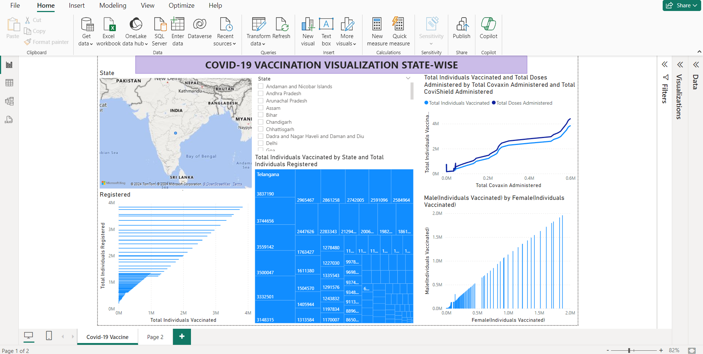
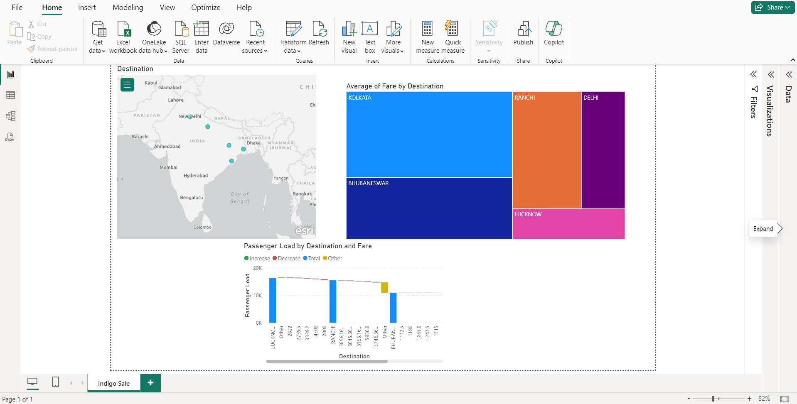

"Data Cleaning In SQL" focuses on improving data quality by identifying and correcting inconsistencies, duplicates, and errors within a dataset. It involves using SQL queries and functions to clean and standardize the data for more accurate analysis and reporting.

"Data Exploration of Covid-19 Dataset in SQL Server" involves using SQL Server to analyze and extract insights from Covid-19 data. This includes querying the dataset to identify trends, patterns, and key statistics related to the pandemic's spread and impact
The "Tableau Projects Collection" showcases various data visualization projects created using Tableau. These projects involve transforming raw data into interactive and insightful visual dashboards, highlighting trends and key metrics across different datasets

The "Amazon Web Scraper Project" involves developing a web scraper using Python to extract product data from Amazon. This project includes collecting information such as prices, ratings, and reviews to analyze market trends and consumer preferences.
The "Movie Portfolio Project" involves analyzing a movie dataset with budget, company, country, director, name, rating, released, star, and year. The project includes using Python to explore relationships, trends, and patterns within the data, and visualizing key insights about the film industry.

The "Covid-19 Vaccination Dashboard" project involves creating an interactive dashboard to visualize state-wise vaccination data Using Power BI. This includes analyzing the number of vaccinated individuals across different states, providing insights into the distribution and progress of vaccination efforts.

The "IndiGo Fare Sales Dashboard" project involves creating an interactive dashboard to analyze fare sales data for IndiGo airlines using Power BI. This includes examining ticket prices, sales trends, and revenue across different routes and time periods, providing insights into the airline's pricing and sales strategies.